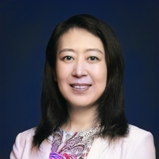
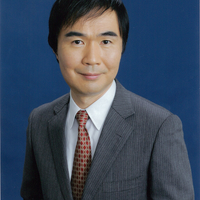

{kind=link}
Abstract
Energy efficiency has evolved from an operational objective into a contractual engineering requirement for next-generation HPC systems. This BoF explores how procurement contracts shape future supercomputer design by comparing approaches from China, Japan and Europe. Yutong Lu examines the architectural evolution from Tianhe-2A to CPU-based LineShine, highlighting CPU-based acceleration methods without relying on accelerator components. Satoshi Matsuoka presents Fugaku to FugakuNEXT, emphasizing procurement strategies for higher simulation performance within a power envelope. Thomas Schulthess discusses energy-to-solution requirements and software optimization clauses. An interactive forum debates how procurement clauses drive architectural choices, software portability, sustainability, and innovation in late-2020s deployments.
Description
Energy efficiency is no longer just an operational goal; it is a contractual necessity. While the prior BOF edition proved that the HPC community has a massive appetite for sustainable procurement strategies, it primarily focused on retrospective processes, answering "What did we buy?" This edition shifts the focus to the procurement of next-generation systems, treating procurement as a first-order systems engineering control mechanism that shapes architecture, software co-design, and long-term operational sustainability. This Birds-of-a-Feather session bridges the gap between high-level policy and deep-dive technical contract enforcement, shifting to a forward-looking format focused on future deployments (System N to System N+1) slated for the late 2020s and 2030s. This session explores how leading facilities use contract language as a primary driver of architectural tradeoffs under harsh facility power caps, heterogeneous integration, and intense carbon-neutrality mandates.
To ensure a technical and comparative format, three global leaders representing pioneering sites in China, Japan and Europe will set the stage with focused lightning talks. The lightning talks are intentionally structured to provoke comparison and audience debate rather than provide comprehensive project updates. Each presenter will follow a structural rubric answering key questions: What engineering challenge dominates? What specific procurement clause matters most? How will compliance be technically verified? And what system are they buying next? The audience will be able to compare how different regional contract structures directly influence architectural choices and energy efficiency.
Following the lightning talks from three speakers, the session transitions into an interactive "Community Exchange Open Forum" driven by the "One-Clause Challenge." The session is designed to facilitate discussion, encourage broad participation, and conclude with key insights and actionable takeaways. The moderator will prompt speakers and attendees alike to isolate exactly one forward-looking procurement requirement that should become standard practice in future contracts. The audience will actively debate polarizing technical questions: Should procurement prescribe specific architectural components or purely functional outcomes? Can energy budgets and software portability targets be expressed as legally binding KPIs without stifling innovation? Attendees will leave with actionable strategies for using contract language as a rigorous engineering instrument.
Scope
This BoF is designed as a "Community Exchange Open Forum", where speakers act as consultants responding to audience questions rather than engaging in a traditional panel discussion. Targeted participants include HPC system administrators, facility managers, procurement specialists, researchers, and vendors from academia, government, and industry worldwide.
Agenda
Organizer: Ayesha Afzal — Erlangen National High Performance Computing Center, Germany
The organizer outlines the topic, goals, and interactive format.
🟦 Lightning Talks: Setting the Stage
- Duration: 6 minutes — Lightning talk
- Duration: 6 minutes — Lightning talk
- Duration: 6 minutes — Lightning talk
Speaker: Yutong Lu — National Supercomputing Center in Guangzhou & Shenzhen / Sun Yat-sen University, China
Speaker: Satoshi Matsuoka — RIKEN Center for Computational Science (R-CCS), Japan
Speaker: Thomas Schulthess — Swiss National Supercomputing Centre (CSCS), Switzerland
Check the speaker bios here.
🟨 Interactive Community Discussion
Moderator: Jim Rogers — Oak Ridge National Laboratory (ORNL), USA
-
Duration: 35 minutes — Audience-Driven Discussion
Audience-driven participation, with attendees sharing challenges, responding to discussion prompts, and contributing through show-of-hands polls and brief introductions.
- Duration: 5 minutes — Closing
Speakers
 |
Prof. Yutong Lu National Supercomputing Center in Guangzhou & Shenzhen; Sun Yat-sen University, China |
Yutong Lu, from the National University of Defense Technology (NUDT) in China, will analyze the architectural evolution from the legacy Tianhe-2A system to the custom, all-CPU platform driving the Top500#1 LineShine supercomputer. She will explore how extreme density limits and specific regional facility constraints are written into active contracts to enforce full-stack domestic architectures and CPU-based acceleration methods without relying on accelerator components.
BIO Dr. Yutong Lu is a Professor in the Department of Computer Science and Engineering at Sun Yat-sen University, China. She also serves as Director of the National Supercomputing Centers in Guangzhou and Shenzhen. Professor Lu specializes in high-performance computing. She was Deputy Chief Designer of the Tianhe-2 supercomputer. She currently serves as Chief Designer of the LineShine exascale supercomputer. She has been dedicated to bridging high-performance computing with major scientific and engineering applications. she has helped make advanced computing capabilities more accessible to a broader community of researchers and industry users. Professor Lu has been recognized as an ISC Fellow and a CCF Fellow. She has also led multiple major research projects supported by the MOST and the NSFC. Her current research focuses on cutting-edge computer architectures and the convergence of advanced AI and HPC systems and applications.
 |
Prof. Satoshi Matsuoka RIKEN Center for Computational Science (R-CCS), Japan |
Satoshi Matsuoka, from the RIKEN Center for Computational Science (R-CCS) in Japan, will detail the co-design path from Fugaku to its successor, FugakuNEXT. He will share hard engineering data on how to structure a contract that contractually guarantees a simulation performance leap while technically constraining a heavily GPU-dense system within a rigid 40MW power envelope.
BIO Prof. Satoshi Matsuoka has been the director of the RIKEN Center for Computational Science (R-CCS) since April 2018, developing and hosting Japan’s flagship supercomputer, Fugaku, which became the fastest supercomputer in the world in 2020. Satoshi's longtime contributions to HPC systems research, as well as application of the results to create innovative leadership supercomputers, were commended with the Medal with Purple Ribbon by His Majesty Emperor Naruhito of Japan in 2022. Other accolades include selection as a Fellow of ACM, ISC, and JSSST; the ACM Gordon Bell Prize in 2011 and 2021; the IEEE-CS Sidney Fernbach Award in 2014; and the IEEE-CS Seymour Cray Computer Engineering Award in 2022—some of the highest awards in the field of HPC.
|
Prof. Thomas Schulthess Swiss National Supercomputing Centre (CSCS), Switzerland |
Thomas Schulthess, representing CSCS in Europe, will focus on the technical enforcement of energy-to-solution metrics and strategies for contractually binding software optimization maturity into hardware delivery.
BIO Prof. Thomas Schulthess is the head of the Swiss National Supercomputing Centre (CSCS) in Manno, and also holds a full professorship in computational physics at ETH Zurich. Thomas pursued his physics studies at ETH Zurich, earning his PhD in 1994 with a dissertation on surface physics that integrated both experimental work and supercomputing simulations. Following his doctoral studies, he continued his research in the United States and has since authored approximately 70 research papers published in leading journals in his field.
 |
Dr. Jim Rogers Oak Ridge National Laboratory (ORNL), United States of America |
Jim Rogers will guide the discussion, facilitate the speaker-audience exchange, and summarize key insights and actionable takeaways for broader community use.
BIO Dr. Jim Rogers is Computing and Facilities Director for the National Center for Computational Science at the Oak Ridge National Lab. Mr. Rogers has thirty years of experience in high-performance computing (HPC). He has responsibility for strategy, acquisition, delivery, integration, and transition to production for high performance computing, storage, networking, and analysis systems as well as the physical facilities that house the systems. These activities extend across multiple Federal customers.
Organizers
 |
Dr. Ayesha Afzal FAU Erlangen-Nürnberg; Erlangen National High Performance Computing Center, Germany |
BIO Dr. Ayesha Afzal is a researcher at NHR@FAU, Germany. She holds a PhD in Computer Science, an MSc in Computational Engineering, and a BSc in Electrical Engineering. Within IEEE CS, she serves as Vice Chair of the Germany Section Chapter and Region 8 A2, and TCHPC Secretary. She founded the NHR Women in HPC chapter and is FAU’s elected women’s representative. She contributes to HPC initiatives in performance engineering and energy efficiency, including KONWHIR (LRZ), DFG MOD4COMP (TU Dresden and Jülich), and NHR EEC (German NHR centers). Her work has received distinctions: ISC PhD Forum Award (1st, 2021), IEEE TPDS Best Paper Runner-up (2023), SC PMBS Best Short Paper (2023), WeAreTheCity Global Award (2023), SC Best Research Poster Finalist (2024), ISC Best Research Poster (1st, 2025), PhD with highest distinction (summa cum laude, 2026), and SCW75 HPC List (2026). At SC26, she serves as Posters Chair and organizes two workshops.
 |
Natalie Bates Energy Efficient High Performance Computing Working Group (EE HPC WG), United States of America |
BIO Natalie Bates has led the Energy Efficient High Performance Computing Working Group (EE HPC WG) since its inception in 2010. Natalie has been the technical and executive leader for this ‘open source’ working group that disseminates best practices, shares information (peer to peer exchange), and takes collective action. Prior to leading the EE HPC WG, Natalie's career spanned twenty years with Intel Corporation where she was a senior manager of highly complex programs taking new products to market, delivering multi-component and multi-partner platforms, and negotiating strategic technical industry initiatives. She is a strong advocate and effective agent for organizational change, transition and process improvement. Her broader interest is to influence human’s impact on the planet by promoting sustainability and leveraging her extensive experience with computing and collaboration. Natalie has a BA in Sociology from Reed College and studied Electrical Engineering at Sacramento State University, California.
Prior BoFs
ISC BoF (2026, HPC Procurement, Energy Efficiency and Sustainability, 196 attendees registered): Website (Swapcard)
Contact
For questions, please contact at ayesha.afzal@fau.de and nbates@lbl.gov.
Announcements
BOF (SC26 link) will happen in Room W185abc of McCormick Place CONGRESS CENTER CHICAGO!
Agenda and Speakers Announced!
BoF agenda and speakers have been announced. Check the details here.
Location and Time Announced!
The exact location, date and time of the BoF session has been announced now: Tuesday, 17 November 22026, 12:15pm to 1:15pm CST, W185abc.
This is the SC26 edition of the BoF. The first ISC 2026 edition is now a past edition.